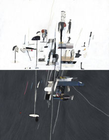
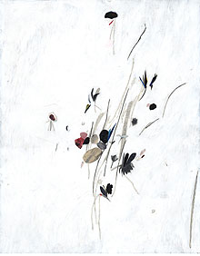
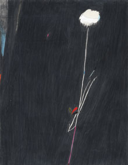

|  |  |  |
exhibition archiveVanitasby Joseph Hart September 11 - October 24, 2008 images above from left to right: Drawing Against Itself No. 2, 2008, collaged paper, ink, acrylic, colored pencil and graphite on paper, 38 x 28 inches Big Smile, 2008, collaged paper, ink, acrylic, colored pencil and graphite on paper, 28 x 22 inches Funny Feeling, 2008, collaged paper, ink, acrylic and graphite on paper, 13 x 10 inches |
The Wild Project is pleased to present its second exhibition, Vanitas, an installation of works on paper by Joseph Hart. Fusing painting, drawing, and collage techniques, Hart focuses on the language of display. His detailed renderings of museum vitrines and his delicate reinterpretations of classical floral still lifes examine how beauty is idealized and value is assigned to objects. In Drawing Against Itself No.2, images of busts, heads and other artifacts sit atop sharp lines as if they were the proudly speared conquests of a primitive ritual. In Funny Feeling, shards of color extend across an obsessively drawn backdrop of graphite mimicking a botanical still life on the brink of extinction. Hart!s elegant images highlight the significance of viewing history through artifact. Originally from New Hampshire, Hart lives and works in Brooklyn, New York. He received a BFA from the Rhode Island School of Design in 1999. Most recently, his work was featured in the New Talents section at Art Cologne, and in Here And Elsewhere, an exhibition of emerging artists at The Bronx Museum of the Arts. He also recently served as a jury member for the 2008 Scholastic Art Awards, a national scholarship program for young artists. Hart's mixed media works on paper have been exhibited at Galerie Markus Winter in Berlin, Galleri Loyal in Stockholm, Galeri Vidal St. Phalle in Paris, Klaus Von Nichtssagend in Brooklyn, as well as Alexander & Bonin, Freight + Volume and CRG Gallery in New York. The Wild Project, a new environmentally conscious venue for contemporary theater, film, and visual arts, is dedicated to supporting the arts by offering space and resources to emerging artists. Our programming intends to cultivate a supportive artistic network, explore innovative and thoughtful approaches to art making and by doing so enrich the local community. For more information please contact Curator Hilary Schaffner at 212. 228.1195 or info@thewildproject.com. |
The Artist
Born in New Hampshire (1976) solo exhibitions:2008 Vanitas, The Wild Project, New York, NY selected group exhibitions:2008 Cover Version, Taylor de Cordoba, Los Angeles, CA education:1999, Rhode Island School of Design, BFA awards / honors:2008, Art Cologne / New Talents, selected artist, Cologne, Germany selected bibliography:Chu, Ingrid, “Accident Blackspot”, Time Out New York, August, 2008 |
exhibition archive |
|||
| 2016 | 2015 | 2014 | 2013 |
| 2011 | 2010 | 2009 | 2008 |